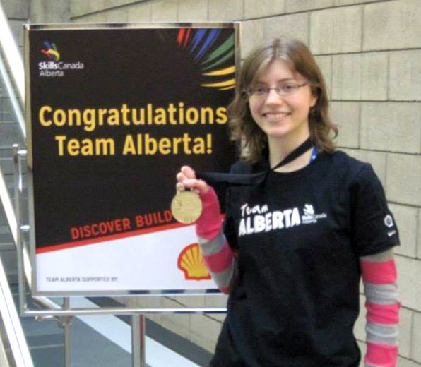

I'm currently a fourth-year student at the University of
Alberta, specializing in computing science and completing the
Computer Game Development certificate. I like to draw and program. I
think it's really important to have both of these things. I like making my own costumes and teching myself new skills. I enjoy playing video games, reading, and watching anime.
My history
I'm originally from Grande Prairie, AB. I studied at Grande
Prairie Regional College (GPRC) for two years before transferring to the U
of A in 2014. Originally, I was planning to complete a degree in the arts,
but I switched to computing science for my second year at GPRC. I have a background in Skills competitions,
competing in both secondary and post-secondary graphic design. I defeated NAIT and SAIT competitiors
to reach
the National competition in Toronto 2014. I did my first Hackathon this year
and I really enjoyed it! I've also participated in a GameJam in the past as the artist for our 48 hour project.
What I have to Offer
I have skills in both the arts and the sciences. I will be
completing my degree specializion in computing science this April,
and I have worked as a graphic designer fullime for two summers. I am a very hard worker, I
am eager to learn new things, and I'm good at learning things on my own.
Important Things to Know About Me
I'm a pretty quiet person. I really care about mental health, LGBTQ+ issues, and
diversity. I volunteer as a Science Mentor for students
transitioning to university life. I am currently teaching myself Krita and Mandarin Chinese.